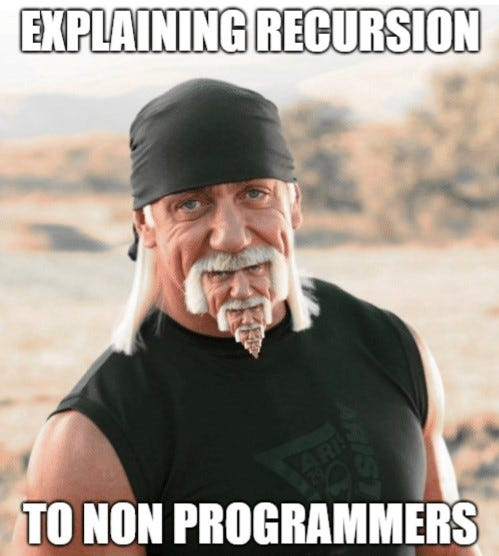

This page describes several programming techniques used in professional programming.
There are three main programming constructs
Code is executed line by line from the top to the bottom.
The same code is run multiple times. If the code is repeated a known number of times, this is called count controlled iteration. If not, then it is called condition controlled iteration.
Certain lines of code are only executed if a condition is met.
Recursion is where a subroutine calls itself. Here is a visual to explain recursion:
